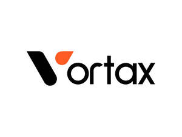

Trade Mark Journal No.2025/027 4 July 2025
UK00004220732 18 June 2025 (35)

- Class 35
- Tax preparation; Preparation of income tax returns; Income tax returns (Preparation of -); Tax filing services; Tax planning [accountancy]; Preparation of tax returns; Tax returns (Preparation of -); Tax advice [accountancy]; Tax consultations [accountancy]; Tax return preparation; Preparation and completion of income tax returns; Preparation of tax declarations; Tax consultancy [accountancy]; Tax assessment preparation; Tax return advisory [accountancy] services; Consultancy relating to tax accounting; Tax assessment [accounts] preparation; Tax declaration procedure services; Computerised tax assessments (preparation of -) [accounting]; Advice on tax preparation; Accountancy advice relating to the preparation of tax returns; Tax preparation and consulting services; Accounting services relating to tax planning; Accountancy advice relating to tax preparation; Taxation [accountancy] advice; Advisory services relating to tax preparation; Taxation [accountancy] consultation; Taxation [accountancy] consultancy; Accounting consultancy relating to taxation; Wage payroll preparation; Accountancy advice relating to taxation; Accounting services for pension funds; Payroll assistance; Payroll preparation; Payroll advisory services; Preparation of documents relating to taxation; Cost accounting; Accountancy; Accountancy services; Chartered accountancy business services; Accountancy, book keeping and auditing; Book-keeping and accounting; Book-keeping and accounting services; Accounting; Computerised accounting; Business accounting advisory services; Accounting, in particular book-keeping; Accountancy services relating to accounts receivable; Business consultancy to firms; Consultancy regarding business organisation and business economics; Forensic accounting services; Accounting services; Business organisation consultancy; Accounting advisory services; Consultancy relating to auditing; Business advice relating to accounting; Book-keeping; Consultancy (Professional business -); Professional business consultancy; Business consultancy (Professional -); Bookkeeping; Business consultancy; Business management and organisation consultancy; Business management organisation consultancy; Business organisation and management consultancy; Computerised accounting (Preparation of -); Business consultancy services relating to insolvency; Consultancy relating to business organisation; Administrative accounting; Management accounting; Computerised auditing; Business organisation consulting; Provision of information relating to accounts [accountancy]; School fee accounting services; Professional business consultancy services; Business appraisal consultancy; Business management and consultancy; Business management consultancy; Computerised book-keeping; Consultancy and information services relating to accounting; Business secretarial services; Business advisory and consultancy services; Business consultancy and advisory services; Computerized accounting services; Business organisation and management consulting; Business consultancy services; Business management consultancy and advisory services; Consultancy and advisory services for business management; Consultancy relating to business management; Business advice and consultancy relating to franchising; Business management and consultancy services; Computerised accounting (Maintenance of -); Business organisation advice; Advisory services relating to business organisation; Business planning consultancy; Advisory services relating to business organisation and management; Consultancy relating to business efficiency; Assistance and consultancy relating to business management and organisation; Consultancy relating to business analysis; Accounting services relating to costs for farming enterprises; Business administration consultancy; Recruitment consultancy for legal secretaries; Professional consultancy relating to business management; Consultancy relating to business management and organisation; Business management and organisation consultancy services; Consultancy relating to business advertising.
Vortax Ltd